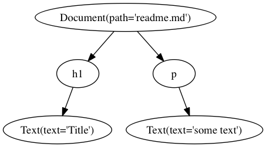

Computer Words is a tool and document processing API that helps you write documentation for your software library. It is conceptually similar to Sphinx.
First, install Python 3.5. (Yes, I'm serious. See Why Python 3.5?) Then get the source code of this project (that's right, I haven't released it yet) and install the requirements. Now you're ready to run! You just need to write a Markdown file and a config.
docs/index.md:
# My Cool Project
Hello world!
docs/conf.json:
{
"site_title": "My Cool Project",
"site_subtitle": "The coolest project ever",
"css_files": ["style.css"],
"file_hierarchy": ["*.md"]
}
In normal Markdown, whenever you write inline HTML, it's passed through to the output verbatim. But in Computer Flavored Markdown, it's parsed and can have meaning. It becomes part of the abstract syntax tree and can be changed during compilation.
Take for example, the <table-of-contents /> tag. This is not an HTML tag, but it has meaning in Computer Words. Specifically, there is a set of transforms that collects all your headings, and replaces the contents of <table-of-contents /> with:
You might be thinking to yourself, “oh great, another crappy Markdown variant.” Well, I am thinking the same thing. I did my best to mitigate the damage, but since this is still an early-development project, there are still major problems.
The goal is to let you write your favorite markup language, assuming that language is Markdown, while also supporting the complex and generalized needs of a software documentation system.
In an ideal world, I could simply describe Computer Flavored Markdown as “CommonMark, but the output is an abstract syntax tree instead of an HTML string.” In reality, it is exactly that, with two exceptions:
The HTML is parsed by a simple recursive descent parser that I wrote, not a proper spec-following web browser. It was actually written as a BBCode parser. At some point I swapped the square brackets for angle brackets.
The awkward marriage of a CommonMark parser, which doesn't try to parse HTML but merely faithfully pass it through, and a hand-written HTML parser, is complicated, and in this case buggy, with extremely bad error messages.
I'm not yet sure how to solve this problem without forking CommonMark or just writing a lot of really bad hacks.
First, your files are parsed into a tree called the “Computer Words Document Object Model”, or CWDOM. So this:
# Title
some text
becomes this:

Then we apply a processor library to the graph. A library is a mapping of node_name -> [processor]. A processor is a function like this:
@library.processor('xxx') # operate on 'xxx' nodes
def process_xxx(node_store, node)
# you can mutate the node, its children, or its
# ancestors (but not its siblings).
# In this case, we are swapping the node in place for
# another node, which will have the original node's
# parent and children.
node_store.replace_node(node, CWDOMNode('yyy'))
Each node will be processed at least once, in a post-order tree traversal (meaning that a node will be visited before its ancestors). If a node is mutated by another node's processor, that node will be marked dirty and its processors will be run again.
Documentation authors are mostly library maintainers.
Library maintainers don't want to invest lots of time in their documentation system, because it is a distraction from their work.
Therefore, using Computer Words should mostly be obvious. Using it should not require authors to constantly refer to syntax references or other meta-documentation.
Since the documentation is for software, Computer Words should make it easy to integrate with software. Plugins (custom tags) are a core feature.
Markdown is the language of GitHub, BitBucket, and GitLab. Software developers write Markdown all the time. Since they already know Markdown, why should they learn a different language to write their documentation?
If you just write a bunch of Markdown files, you end up hosting your docs on a GitHub wiki or some similar abomination. There needs to be some kind of organizing power to bring it together.
The output uses semantic HTML5 markup. That's kind of nice.
It's really to include CSS stylesheets. You might think, “I'm making a web site, so of course I can style it with CSS!” But if you were using another tool, you would find this task to be more trouble than you were expecting. Computer Words makes it really, really simple to add your own CSS. And it includes a normalization stylesheet and some pretty good defaults.
Applying some basic font and color changes is a surprisingly affective way to brand your documentation. You should do it.
Most importantly, because it is a pleasure to write. Computer Words uses pathlib and yield from extensively.
But also, it forces us to treat earlier versions of Python as a separate language, which makes us more likely to write a better API to support non-Python-3.5 languages!
I suspect the project runs fine under Python 3.4. But since few people even run Python 3, it might as well be written in OCaml.
The biggest inspiration for this project is the pairing of Docutils and Sphinx. They have a similar design: a parser turns text documents into a tree, some transforms are done on the tree (including user plugins), and the output is written to HTML.
My pain points with this system are why I started from scratch. Docutils is an old, old project with less-than-great documentation, verbose code that supports Python 2.4(!), and Sourceforge SVN hosting. reStructuredText is hard to remember and in many cases incapable of producing certain markup. Sphinx supports many documentation use cases out of the box, but its plugin API is limited, its tree processing algorithm makes it difficult to write certain kinds of useful plugins, and its theming system is not straightforward. (I should know, I made a theme.)
Pollen gets a lot of things right. It is more conceptually pure and seemingly more powerful than Computer Words, and if I had the time to grok its docs, I'm sure I would enjoy using it.
But its Markdown mode doesn't let you use custom tags (I think?), so you get to pick extensibility, or a markup syntax you already know, but not both.
Sometimes I can't quite convince myself that I'm not just making a worse version of Pollen using Python. But I honestly think that “native” Markdown documentation is the best way to get contributions from users and buy-in from library maintainers. And reading Pollen's documentation, I just don't get the impression that we really share a target audience.